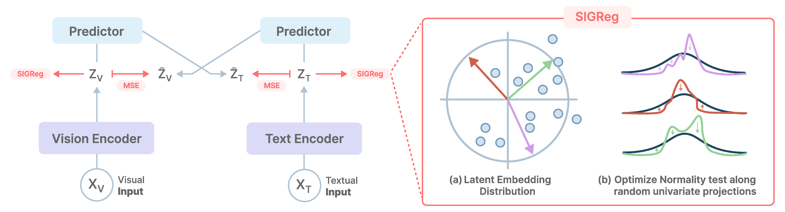
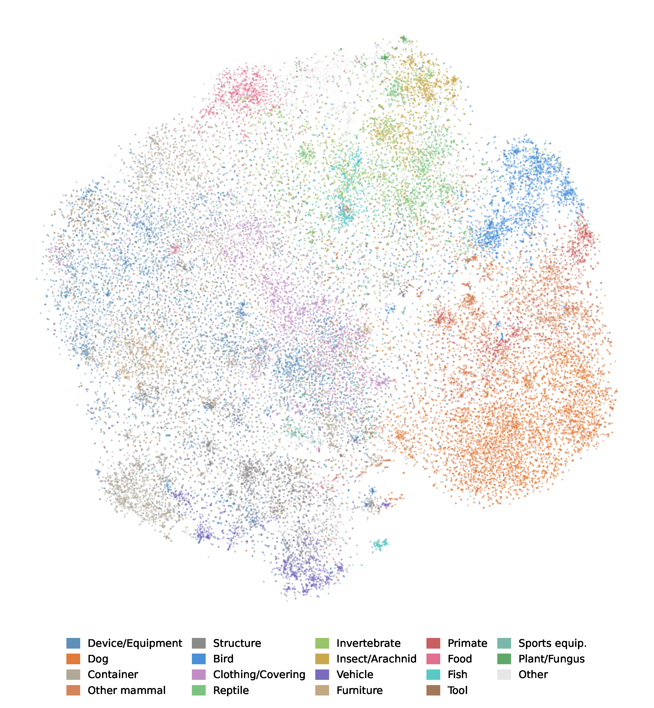
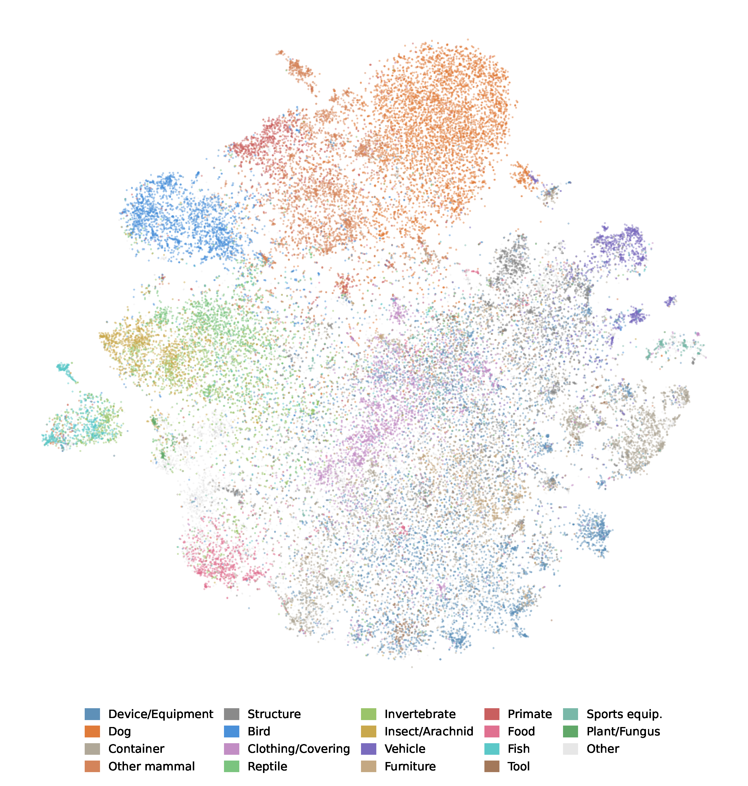
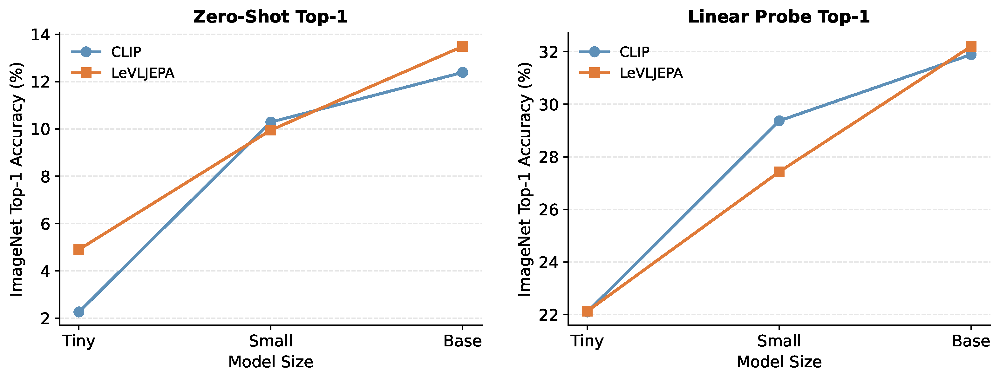
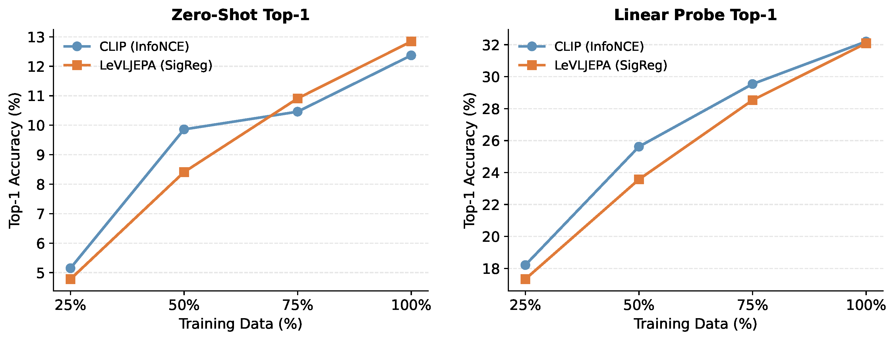
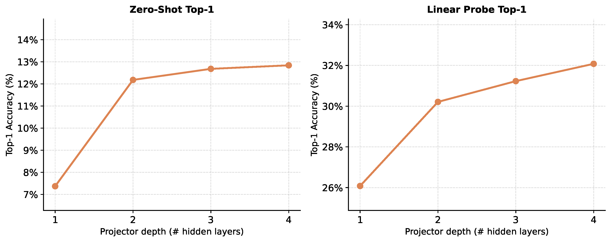
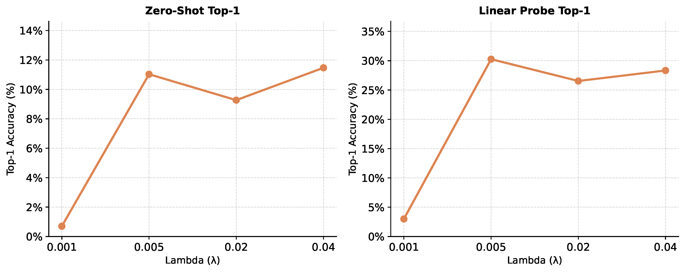

Vision-language pretraining remains dominated by contrastive objectives, while vision-only self-supervised learning has largely moved toward non-contrastive methods. In this work, we investigate whether strong vision-language representations can instead be learned end-to-end without contrastive negatives. We introduce LeVLJEPA, the first fully non-contrastive end-to-end vision-language pretraining method, based on cross-modal prediction with stop-gradient targets and per-modality distributional regularization. LeVLJEPA trains stably and remains competitive with CLIP and SigLIP on zero-shot classification and linear probing at moderate batch sizes.
Analyzing the learned representations, we identify fine-grained collapse — a caption-induced failure mode in which visually similar classes remain compressed because caption supervision under-specifies their distinguishing details — and show it is shared across both contrastive and non-contrastive objectives. To mitigate it, we introduce LeVLJEPA+, which adds visual multi-view prediction to recover stronger fine-grained and spatial structure. LeVLJEPA+ matches strong contrastive baselines on linear probing while outperforming them on dense prediction, background robustness, and fine-grained transfer.
TL;DR: The first fully non-contrastive vision-language pretraining method. Competitive with CLIP/SigLIP on zero-shot and linear probing without any negative pairs, and outperforms contrastive baselines on dense prediction, background robustness, and fine-grained transfer when extended with multi-view visual supervision.

LeVLJEPA overview. Image \(X_V\) and text \(X_T\) are encoded into pre-projected embeddings \(Z_V, Z_T\), then passed through modality-specific predictors to produce cross-modal predictions \(\hat{Z}_V, \hat{Z}_T\). The objective combines (i) cross-modal MSE with stop-gradient targets and (ii) SIGReg applied independently per modality to enforce isotropic-Gaussian marginal distributions.
Why direct alignment collapses. A naive adaptation — replacing CLIP's contrastive term with a symmetric MSE between matched image and text embeddings — degenerates in practice. Gradients from \(\|z^v_i - z^t_i\|_2^2\) flow into both encoders simultaneously, so the only stable configuration is one where both collapse onto the low-dimensional manifold that captions can describe. SIGReg alone cannot prevent this because the cross-modal term dominates by coupling the two encoders.
Cross-modal prediction with stop-gradient. The fix is to introduce cross-modal predictors on each side and detach the prediction targets. A small MLP \(h_v\) predicts the text embedding from the image embedding; a mirror MLP \(h_t\) predicts the reverse. Crucially, the target is stopped:
$$\mathcal{L}_{\text{cross}} = \frac{1}{B}\sum_{i=1}^{B}\Bigl[ \|h_v(z^v_i) - \mathrm{sg}(z^t_i)\|_2^2 + \|h_t(z^t_i) - \mathrm{sg}(z^v_i)\|_2^2 \Bigr]$$With stopped targets each encoder's gradients come only from its own branch, so SIGReg can shape each modality's distribution independently. The full objective is:
$$\mathcal{L}_{\text{LeVLJEPA}} = (1 - \lambda_v - \lambda_t)\,\mathcal{L}_{\text{cross}} + \lambda_v\,\text{SIGReg}(Z^v) + \lambda_t\,\text{SIGReg}(Z^t)$$No negatives, no temperature, no momentum encoder, no teacher-student schedule. Training uses a single forward-backward pass per batch.
LeVLJEPA+ adds a visual multi-view consistency term. For each image, \(V_g\) global and \(V_l\) local crops are generated and their embeddings are pulled toward the global-view mean \(\bar{z}^v_n\):
$$\mathcal{L}_{\text{multi}} = \frac{1}{VB}\sum_{n=1}^{B}\sum_{k=1}^{V} \left\|z^v_{n,k} - \bar{z}^v_n\right\|_2^2$$This directly provides the fine-grained visual signal that caption supervision under-specifies, recovering stronger patch-level structure and fine-grained separability.
Batch size invariance. Because the cross-modal loss is per matched pair and SIGReg operates on the empirical marginal, LeVLJEPA's performance is insensitive to batch size. CLIP exhibits the expected scaling: ImageNet zero-shot Top-1 rises from 11.96 at \(B=1024\) to 16.27 at \(B=4096\). At \(B=1024\), LeVLJEPA outperforms CLIP; at \(B=2048\) the two methods are comparable.
At batch size 2048 on CC12M with an identical ViT-Base/16 backbone, LeVLJEPA is competitive with contrastive baselines despite using no negative pairs. It outperforms both CLIP and SigLIP on STL-10 and scene classification (Places365, SUN397).
| Method | STL-10 | ImageNet | CIFAR-100 | Places365 | SUN397 | ||||
|---|---|---|---|---|---|---|---|---|---|
| Top-1 | Top-1 | Top-5 | Top-1 | Top-5 | Top-1 | Top-5 | Top-1 | Top-5 | |
| CLIP | 68.05 | 12.39 | 28.55 | 9.77 | 30.74 | 15.68 | 38.78 | 22.43 | 49.36 |
| SigLIP | 68.33 | 14.05 | 31.28 | 13.77 | 36.06 | 18.40 | 43.45 | 25.27 | 54.78 |
| LeVLJEPA | 74.16 | 12.84 | 30.23 | 11.03 | 29.70 | 20.24 | 45.04 | 25.27 | 53.98 |
Zero-shot Top-1/Top-5 accuracy (%) at batch size 2048 on CC12M. Highest per column in bold.
Linear and MLP probing on frozen ViT-B/16 CLS features across five benchmarks. LeVLJEPA matches the contrastive baselines. LeVLJEPA+, augmented with multi-view visual supervision, nearly matches CLIP-Rocket while outperforming it on STL-10, Places365, and SUN397.
| Method | STL-10 | ImageNet | CIFAR-100 | Places365 | SUN397 | |||||
|---|---|---|---|---|---|---|---|---|---|---|
| Lin. | MLP | Lin. | MLP | Lin. | MLP | Lin. | MLP | Lin. | MLP | |
| CLIP | 84.2 | 87.3 | 32.1 | 41.4 | 54.6 | 66.4 | 26.0 | 34.9 | 47.2 | 55.0 |
| SigLIP | 85.1 | 87.9 | 32.6 | 41.7 | 54.5 | 65.8 | 27.5 | 35.9 | 48.2 | 55.9 |
| LeVLJEPA | 84.8 | 87.7 | 31.8 | 40.8 | 51.5 | 63.6 | 26.7 | 35.5 | 47.6 | 55.0 |
| CLIP-Rocket | 91.7 | 93.1 | 43.1 | 52.8 | 63.2 | 72.5 | 33.2 | 41.5 | 58.0 | 64.9 |
| LeVLJEPA+ | 92.0 | 93.2 | 42.6 | 52.3 | 59.9 | 70.1 | 34.4 | 41.6 | 59.3 | 65.6 |
Linear and MLP probing Top-1 accuracy (%) on frozen features. All methods trained on CC12M with ViT-Base/16 at batch size 2048. Results averaged over three probe seeds.
Caption supervision aligns images and text at the level of natural language descriptions, but such descriptions often under-specify fine-grained visual distinctions. Different dog breeds, bird species, or instrument variants may receive highly similar captions even when they correspond to distinct ImageNet classes. We call the resulting compression of visually similar classes in representation space fine-grained collapse.
Using class-level representational similarity analysis (RSA) on all \(\binom{1000}{2} = 499{,}500\) ImageNet class pairs, we find that CLIP, SigLIP, and LeVLJEPA largely agree on which pairs are compressed (RSA correlations 0.705–0.930). Among the top-5% most similar pairs, same-superclass pairs account for ~46–47% under all three methods — a 7× enrichment over the 6.58% base rate. The 17,564 pairs above the 95th percentile under all three methods simultaneously contain 58.0% same-superclass pairs, a 281× larger overlap than expected under independence. This shared fine-grained geometry is caption-induced rather than objective-specific.

CLIP

LeVLJEPA
t-SNE of frozen ImageNet validation embeddings colored by WordNet superclass. Broad semantic structure is visible under both methods; fine-grained class neighborhoods remain entangled.
Using frozen patch tokens with a lightweight linear head, LeVLJEPA+ substantially outperforms all baselines on both semantic segmentation and monocular depth estimation. The margin is larger than on classification, reflecting that contrastive VL objectives shape the CLS token at the expense of patch-level structure.
| Method | mIoU ↑ |
|---|---|
| CLIP | 13.75 |
| SigLIP | 13.81 |
| CLIP-Rocket | 18.80 |
| LeVLJEPA+ | 20.91 |
Linear segmentation on frozen patch tokens. 150 classes.
| Method | RMSE ↓ | AbsRel ↓ | δ₁ ↑ |
|---|---|---|---|
| CLIP | 1.073 | 0.298 | 0.478 |
| SigLIP | 1.086 | 0.301 | 0.476 |
| CLIP-Rocket | 1.012 | 0.284 | 0.505 |
| LeVLJEPA+ | 0.979 | 0.271 | 0.524 |
Linear depth estimation on frozen patch tokens.
| Method | Original | Mixed-Same | Mixed-Rand |
|---|---|---|---|
| CLIP | 83.93 | 79.93 | 80.22 |
| SigLIP | 85.04 | 74.89 | 75.83 |
| CLIP-Rocket | 83.83 | 81.90 | 81.80 |
| LeVLJEPA+ | 84.30 | 82.44 | 82.81 |
Linear classification (%) on frozen CLS tokens. LeVLJEPA+ is most robust to background substitution, suggesting more foreground-focused representations.
| Method | Top-1 | Top-5 |
|---|---|---|
| CLIP | 26.58 | 54.91 |
| SigLIP | 26.76 | 54.43 |
| LeVLJEPA | 26.52 | 53.23 |
| CLIP-Rocket | 34.50 | 64.15 |
| LeVLJEPA+ | 35.67 | 64.78 |
Linear probing (%) on frozen CLS features. LeVLJEPA+ slightly outperforms CLIP-Rocket on fine-grained aircraft classification.
Both LeVLJEPA and CLIP improve consistently with backbone size (ViT-Tiny → Small → Base). LeVLJEPA remains competitive with CLIP across the full range, with a slight edge on zero-shot at ViT-Tiny and ViT-Base.

ImageNet zero-shot (left) and linear probing (right) across ViT-Tiny, Small, and Base.
Both methods scale smoothly with data. LeVLJEPA has a modest disadvantage at small fractions of CC12M, but converges to near-identical linear probing accuracy at the full dataset.

ImageNet zero-shot (left) and linear probing (right) when trained on 25%, 50%, 75%, and 100% of CC12M under the same update budget.
A single hidden layer is insufficient (zero-shot drops to 7.4%, linear probing to 26.1%). Performance stabilizes from depth 2 and improves monotonically up to depth 4. The default configuration of 4 layers sits in the stable, high-performance region.

Zero-shot (left) and linear probing (right) Top-1 as a function of cross-modal predictor depth.
Training is robust to \(\lambda\) across two orders of magnitude (0.005–0.04). Below \(\lambda = 0.005\), SIGReg is too weak to enforce isotropy and training degenerates. No precise tuning is required as long as the regularization is active.

Zero-shot (left) and linear probing (right) Top-1 as a function of \(\lambda\) on a log scale.
This project page is built on top of the LeWorldModel website template by Lucas Maes et al. We thank them for making their code publicly available.
@article{levljepa2026,
title = {LeVLJEPA: End-to-End Vision-Language Pretraining Without Contrastive Negatives},
author = {Kuhn, Lukas and Serra, Giuseppe and Balestriero, Randall and Buettner, Florian},
year = {2026},
}